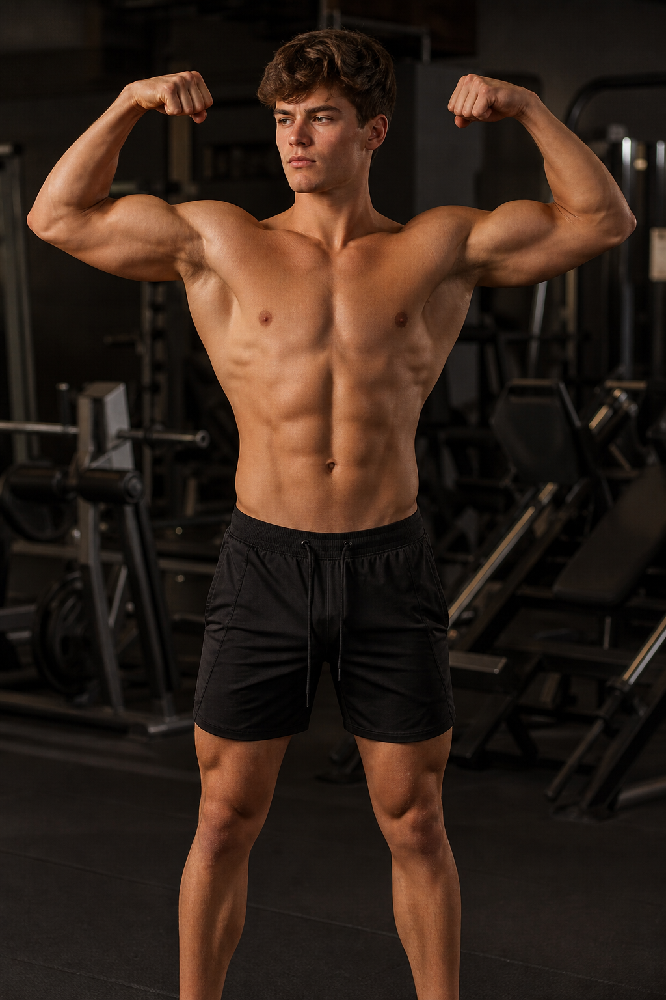

Foto AIAtleta
Nicola
- Altezza
- 176 cm
- Peso
- 73 kg
- Torace
- 83 cm
- Braccio
- 30 cm
- Settimana
- Lun AB · Mer AC · Sab CB
- Volume
- ~70% parte alta · gambe mantenimento
- Distribuzione
- Lun 35% · Mer 25% · Sab 40%
- Durata
- Fase 1: 45–55 min · Dal mese 4: max 60 min
- Fasi
- 4 × 13 settimane · deload sett. 13
Gambe, glutei e polpacci già molto sviluppati: la scheda punta al busto. Apri la scheda online o scarica il PDF (A4, kg a penna). Campo Atleta vuoto in stampa.
Caricamento ciclo…